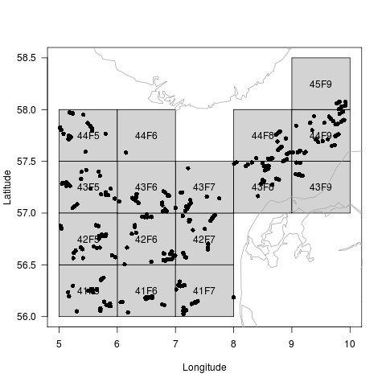
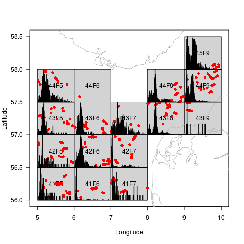
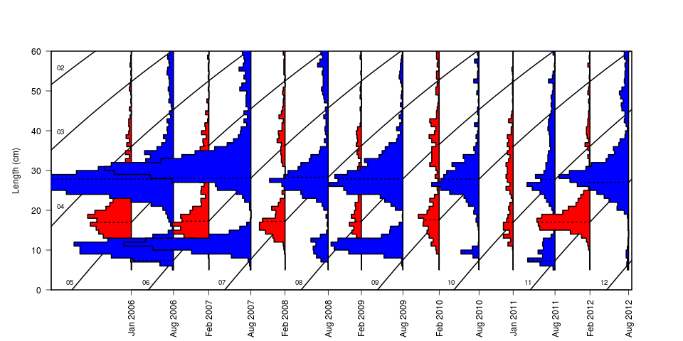
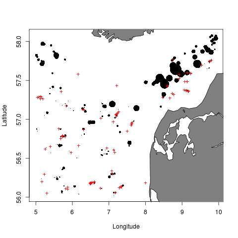
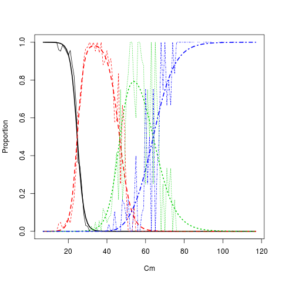

Tutorial
Table of Contents
1 Introduction
Handling and interpreting data from DATRAS correctly from scratch takes
a significant amount of effort and time, but this R package can reduce
much of this workload to a few lines of code. The raw exchange format
can be read into a DATRASraw object in R using the package. These
data objects contain three components
- Age data (CA records) - one vector per individual fish
- Hydro data (HH records) - one vector per haul, position and experimental conditions.
- Length data (HL records) - numbers per length group by haul and species
One particular useful function in the DATRAS package is the subset()
function. It allows subsetting over all three components at once,
without the need for specifying for which component(s) the subset
clauses apply, because the function will look for the variable names in
all components and apply the clauses where appropriate.
2 Getting started
2.1 Install the DATRAS package
To install the DATRAS package, start R and type
install.packages('DATRAS',repos='http://www.rforge.net/',type='source')
2.2 Download data from ICES
Data can be downloaded from the web page http://datras.ices.dk/Data_products/Download/Download_Data_public.aspx . Make sure the Data products check box is set to Exchange Data. Also make sure that the check boxes HH, HL and CA are marked. In this example we will consider the survey NS-IBTS, with all quarters from 2006-2012 and all ships represented. Submit the query, and a file called Exchange will be downloaded. The data file used in this tutorial is also available here http://www.rforge.net/DATRAS/Exchange .
Advanced users can take advantage of a php script shipping with the DATRAS package. It requires command line php installed. For instance, to download data for the NS-IBTS survey for the period 1995-2005 run
downloadExchange("NS-IBTS",1995:2005)
2.3 Read data into R
Data is read into R using the function readExchange
library(DATRAS)
d <- readExchange("Exchange")
To see what is in the data object do
print(d)
Object of class 'DATRASraw' =========================== Number of hauls: 5054 Number of species: 211 Number of countries: 8 Years: 2006 2007 2008 2009 2010 2011 2012 Quarters: 1 2 3 Gears: GOV Haul duration: 0 - 58 minutes
2.4 What is in the DATRASraw object?
The individual components of a DATRASraw object are accessed using
the double square bracket operator:
names(d[["CA"]])
[1] "RecordType" "Survey" "Quarter" [4] "Country" "Ship" "Gear" [7] "SweepLngt" "GearExp" "DoorType" [10] "StNo" "HaulNo" "Year" [13] "SpecCodeType" "SpecCode" "AreaType" [16] "AreaCode" "LngtCode" "LngtClas" [19] "Sex" "Maturity" "PlusGr" [22] "Age" "NoAtALK" "IndWgt" [25] "DateofCalculation" "StatRec" "LngtCm" [28] "Species" "haul.id"
Beyond the default variables, the extra variables LngtCm, Species and haul.id have been added automatically.
Likewise , the hydro and length data records are accessed by
names(d[["HH"]]) names(d[["HL"]])
For instance, to list the 10 most common occuring length groups by species run
summary(d[["HL"]]$Species)[1:10]
Merlangius merlangus Limanda limanda
63383 61977
Clupea harengus Melanogrammus aeglefinus
48354 46988
Pleuronectes platessa Eutrigla gurnardus
41690 40594
Hippoglossoides platessoides Gadus morhua
31214 24598
Sprattus sprattus Microstomus kitt
20650 19603
2.5 Simple data subsetting
dd <- subset(d,Species=="Gadus morhua",25<HaulDur & HaulDur<35, 5<lon & lon<10 & 56<lat & lat<60 )
The reduced data set contains
print(dd)
Object of class 'DATRASraw' =========================== Number of hauls: 424 Number of species: 1 Number of countries: 7 Years: 2006 2007 2008 2009 2010 2011 2012 Quarters: 1 3 Gears: GOV Haul duration: 27 - 32 minutes
2.6 What can be added to the object ?
For convenience, various types of derived quantities and meta-data can
be added to the DATRASraw object.
Most importantly, the raw number of observed individuals per length
group per haul is added as follows
Size spectra on haul level are conveniently analysed using the
addSpectrum() function, which adds the numbers caught per
length group (cm) in the variable N on component 2.
For example, to add the spectrum on data from Quarter 1 and list
column 10 to 15 in the spectrum for the six first hauls:
dQ1 <- subset(dd,Quarter==1) dQ1 <- addSpectrum(dQ1,by=1) head(dQ1$N[,10:15])
sizeGroup
haul.id [16,17) [17,18) [18,19) [19,20) [20,21) [21,22)
2006:1:DEN:DAN2:GOV:26:6 0 0 0 0 0 0
2006:1:DEN:DAN2:GOV:28:7 1 0 0 0 0 0
2006:1:DEN:DAN2:GOV:44:10 0 0 0 0 0 1
2006:1:DEN:DAN2:GOV:42:9 0 0 0 0 0 0
2006:1:DEN:DAN2:GOV:40:8 1 1 0 0 0 0
2006:1:DEN:DAN2:GOV:24:5 0 0 0 0 0 0
Further, numbers at age can be added by
dQ1 <- addNage(dQ1)
see later details.
Spatial data from a shapefile can be added to the hydro data as follows
dQ1 <- addSpatialData(dQ1,"ICES_areas.shp")
Shapefiles with ICES areas can be found at http://geo.ices.dk.
This allows standard ICES areas to be extracted from a DATRASraw
object:
dQ1 <- subset(dQ1,ICES_area=="IIIa")
3 Visualizing data
3.1 Spatial plot
The default plot method of the DATRASraw object provides an overview of the trawl locations
plot(dd)

And if a length spectrum has been added, the length distribution is displayed for each ICES square:
dd <- addSpectrum(dd) plot(dd,col="red")

3.2 Cohort plot
To see the temporal evolution of the length distribution of the stock the function plotVBG is useful
plotVBG(dd,scale=2,ylim=c(0,60),col=c(2,4),lwd=2,by=paste(Year,Quarter))

3.3 Biomass plot
To plot bubbles with areas proportional to the observed biomass in each haul, and red crosses for zero catch hauls, try
dd <- addWeightByHaul(dd) bubblePlot(dd)

4 Age-Length keys
4.1 Simple continuation-ratio logits
Fit age-length key and predict numbers-at-age
library(mgcv)
alk <- fitALK(dQ1,minAge=1,maxAge=4) dQ1$Nage = predict(alk) head(dQ1$Nage)
1 2 3 4+
[1,] 2.220446e-16 2.448222e-05 7.392315e-02 9.260524e-01
[2,] 1.992781e+00 7.218763e-03 2.278510e-07 4.058172e-11
[3,] 1.902358e+00 2.072981e+00 2.455574e-02 1.049175e-04
[4,] 0.000000e+00 0.000000e+00 0.000000e+00 0.000000e+00
[5,] 4.978305e+00 2.170079e-02 3.925881e-02 2.960736e+00
[6,] 0.000000e+00 0.000000e+00 0.000000e+00 0.000000e+00
Plot age length key (smooth and raw proportions by length group)
plotALKfit(alk,row=1) plotALKraw(dQ1,minAge=1,maxAge=4,add=TRUE)

4.2 Spatial age-length keys
Date: 2014-04-02 20:02:24 CEST
HTML generated by org-mode 6.33x in emacs 23